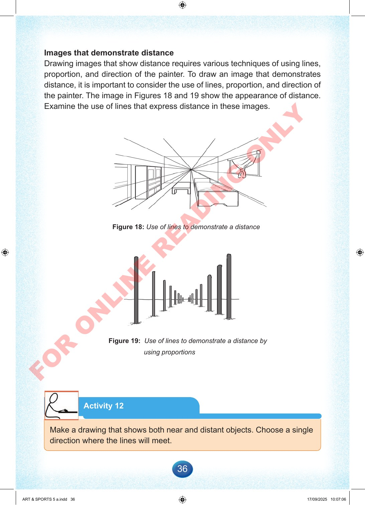

36
Images
that
demonstrate
distance
Drawing
images
that
show
distance
requires
various
techniques
of
using
lines,
proportion,
and
direction
of
the
painter.
To
draw
an
image
that
demonstrates
distance,
it
is
important
to
consider
the
use
of
lines,
proportion,
and
direction
of
the
painter.
The
image
in
Figures
18
and
19
show
the
appearance
of
distance.
Examine
the
use
of
lines
that
express
distance
in
these
images.
Figure
18:
Use
of
lines
to
demonstrate
a
distance
Figure
19:
Use
of
lines
to
demonstrate
a
distance
by
using
proportions
Activity
12
Make
a
drawing
that
shows
both
near
and
distant
objects.
Choose
a
single
direction
where
the
lines
will
meet.
ART
&
SPORTS
5
a.indd
36
ART
&
SPORTS
5
a.indd
36
17/09/2025
10:07:06
17/09/2025
10:07:06
F
O
R
O
N
L
I
N
E
R
E
A
D
I
N
G
O
N
L
Y